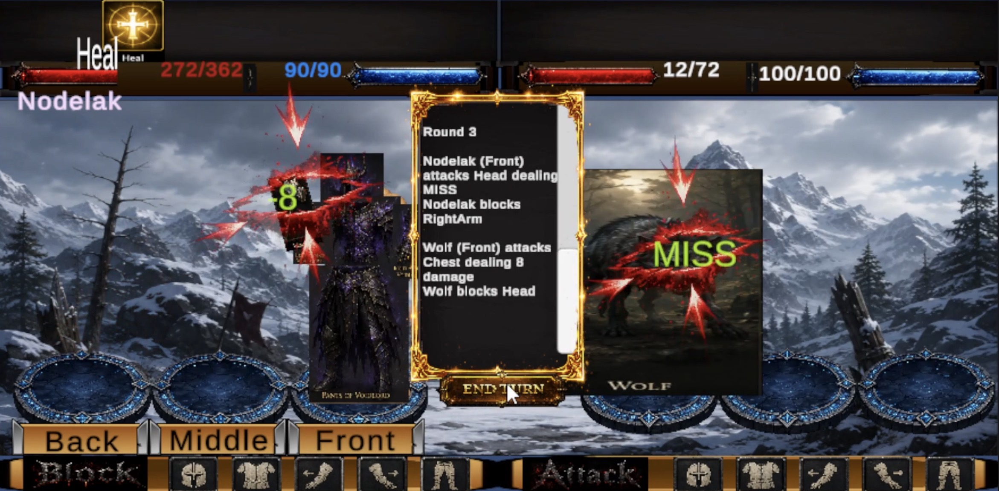

Every journey begins in Emberforge.
Prepare carefully, survive the wilds, and return stronger than before.
The Survivor
You are not a hero.
You are a survivor.
Your journey begins as you flee your homeland while it is consumed by darkness.
Seeking refuge, you arrive in Emberforge, one of the last remaining settlements.
Every expedition is a gamble.
Every return is another chance to grow stronger.
Explore the World
Beyond the walls of Emberforge lies a dangerous world waiting to be explored.
Travel between destinations, uncover hidden locations, gather valuable resources, and discover the secrets buried throughout the Lands of Tribulation.
Every movement across the overworld has a chance to trigger a random combat encounter.
Future updates will expand the world with new climates, enemies, and regions to explore.
Turn-Based Combat

Battle dangerous creatures throughout the overworld, dungeons, and arena.
Each victory grants experience, allowing your character to grow stronger and face increasingly difficult challenges.
As your level increases, you'll gain access to stronger weapons, armour, spells, and future gameplay systems.
Risk & Reward
Equipment recovered during your expeditions is considered unclaimed.
If you fall before returning safely to Emberforge, any unclaimed discoveries may be lost forever.
Knowing when to push forward—and when to turn back—is one of the most important decisions you'll make.
The Appraiser
Return to Emberforge and have recovered equipment appraised to officially claim ownership.
Once an item has been appraised, it becomes a permanent part of your collection and is no longer at risk of being lost during future expeditions.
Secure Your Belongings
Not everything needs to travel with you.
Store valuable equipment safely within Emberforge until you're ready to use it.
Managing your inventory is just as important as winning battles.
Character Progression
Nearly every system within Lands of Tribulation is tied to your character's level.
Weapons, armour, spells, equipment, and future gameplay mechanics become available as you continue surviving, exploring, and growing stronger.
The farther you're willing to venture, the greater the rewards—and the greater the risks.